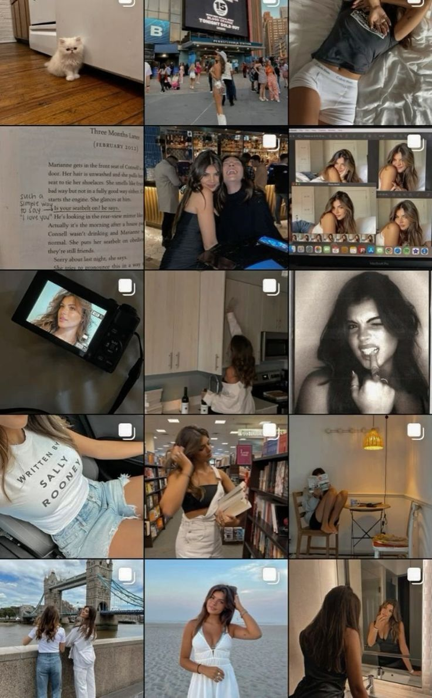
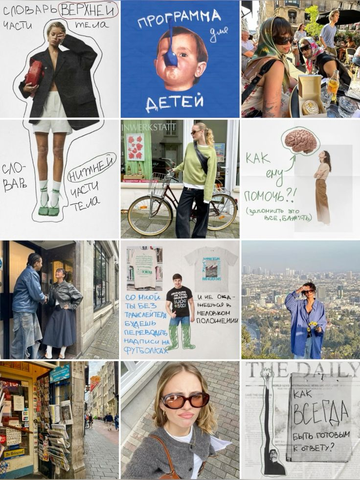
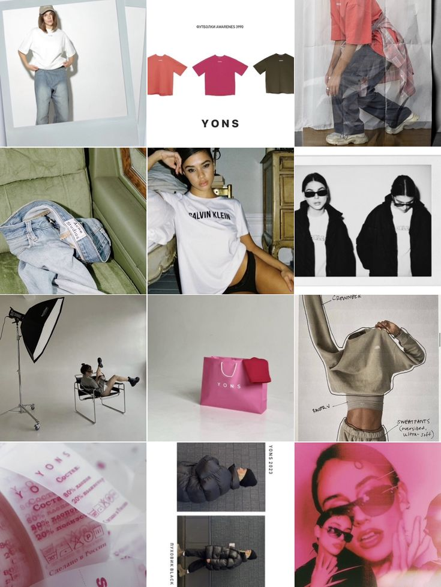
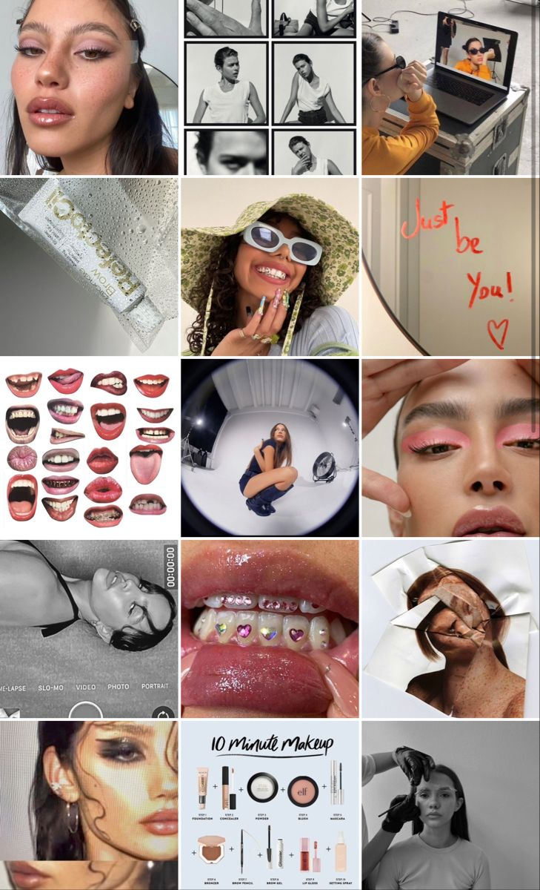
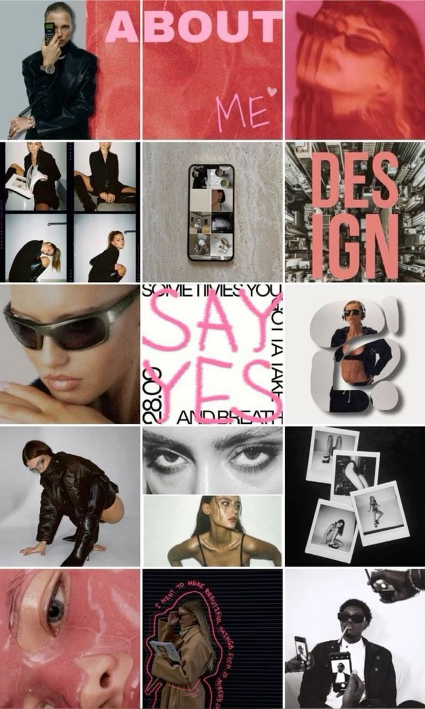

Stages | Job | Back to Top
Influencers
История инфлюенсиров начинается с развития интернета и социальных сетей.
Ключевые этапы:
-
Ранние 2000-е: С развитием блогов (например,
LiveJournal, Blogspot) начали появляться первые интернет-личности,
которые делились своими мыслями и интересами с аудиторией
В этот период блогеры в основном были нишевыми авторами. -
2004–2006: В это время появляются платформы, такие
как YouTube (2005) и Facebook (2004), которые дают людям возможность
не только писать, но и публиковать видео и фотографии.
Появляются первые видеоблогеры (например, Райан Хиггинс на YouTube), которые начинают собирать значительные аудитории. -
2010-е: Инфлюенсеры становятся важным элементом
маркетинга, особенно с ростом Instagram (2010) и Twitter (2006). Люди
с большим количеством подписчиков начинают работать с брендами,
рекламируя их продукты.
Инфлюенсеры делятся личными моментами, советами по моде, косметике и здоровью, что привлекает внимание маркетологов. -
Микроинфлюенсеры и ниши: В середине 2010-х
микроинфлюенсеры (с меньшими, но более вовлеченными аудиториями)
начинают играть большую роль.
Компании начинают понимать, что аудитория инфлюенсера важнее, чем просто количество подписчиков, и начинают работать с теми, кто может предложить более тесное взаимодействие с целевой аудиторией. -
2020-е: Инфлюенсеры становятся важным элементом
маркетинга. Платформы типа TikTok набирают популярность,
открывая новые возможности для создания вирусного контента и привлечения внимания аудитории. На этом этапе многие инфлюенсеры переходят к предпринимательству, открывая свои бренды или линии продуктов. В этом контексте появляется тренд на более искренность и прозрачность, что также влияет на их роль в обществе.
Инфлюенсеры продолжают развиваться, играя ключевую роль в shaping
(формировании) потребительских привычек,
социальных трендов и даже
политической дискуссии.
Как работают инфлюенсеры?
Influencers aestethic
Инфлюенсеры взаимодействуют со своей аудиторией через различные
платформы — Instagram, YouTube, TikTok, Twitter и многие другие.
В
зависимости от их ниши, они создают контент, который может быть как
развлекательным, так и образовательным.
Рекламные кампании с участием инфлюенсеров могут включать:
- Рекомендации продуктов
- Обзоры и unpacking
- Советы и инструкции
- Специальные предложения и скидки для подписчиков





Back to Top